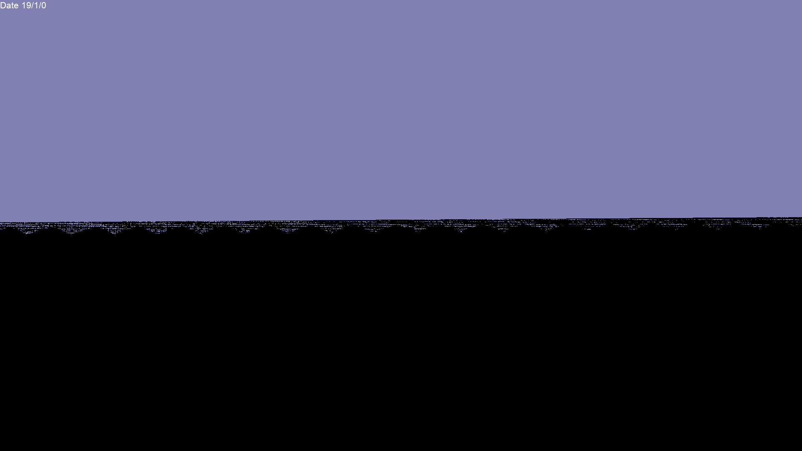
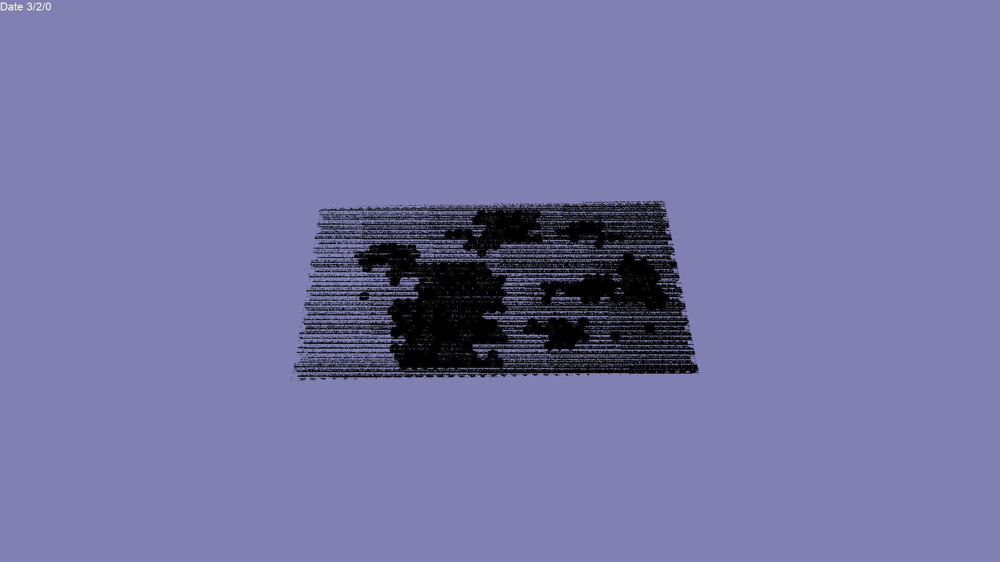

Hey everyone, just recently started using this engine and liking it a lot so far. I’m rather new to working with 3D stuff though and have encountered two issues when working with terrains.
Specifically, I am trying to imitate a Hexgrid which for the most part is working fine. I am hiding the edges of the map with a masking plane, using materials as described in
And the plane is built pretty much the same as here
The plane is positioned at Y=0.1 while the to-be-hidden terrain pieces have a height of 0. This works fine when the camera is near as seen in this screenshot.

However when moving further away the terrain and plane start to flicker and I am not sure how to fix that. At “normal” distance it is only on the edges.

When going very far the even higher places in the terrain start to behave like this.

Currently my terrain has the following properties.
terrain->SetPatchSize(2);
terrain->SetSpacing(Vector3(1.0f, 0.1f, 1.0f));
terrain->SetSmoothing(true);´
terrain->SetOccluder(true);
terrain->SetDrawDistance(200000.0f);
terrain->SetLodBias(200000.0f);
Any ideas on how to fix this? Getting the same issue when using other, “normal”, materials and modifying the plane height only slightly changes the camera distance at which this starts to happen.
My second question is a bit simpler: Is it somehow possible to assign multiple materials to a terrain? I see other objects have an index you can pass when doing ->SetMaterial(…) but this seems to be missing on terrains.
Thanks for any help!